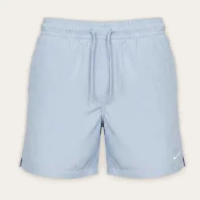

Cable knit
Tops, knitwear
Make a look
Add to a board
In your looks

People wear it with
Navy wool overcoat
LN
Luka’s
Goes with 4 of yours
Grey wool scarf
LN
Luka’s
Goes with 4 of yours
Colour
Navy
Season
Autumn, winter
Worn
4 times, last on Sunday
Notes
Hand wash, dry flat.